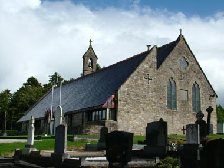
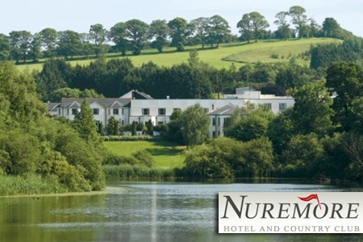

St Patrick's Church, Corracrin
Nestled among the rolling drumlins of North Monaghan is St Patrick’s Church, Corracrin. This charming, local church is where Cathriona celebrated her Baptism, First Holy Communion and Confirmation. St. Patrick’s National School is situated on the same grounds and it is here where Cathriona and her three brothers spent many happy school days. We’ll be enjoying refreshments in the newly opened school hall following the wedding service!
Directions
From Kilkenny/Dublin
- Head north on the M1 out of Dublin
- Take exit 14 off the M1 staying on the N33 for Ardee/Derry
- At 1st and 2nd roundabout on the outskirts of Ardee follow the directions for the N2 to Derry.
- Stay on the N2 for approx. 1hr
- Bypass Monaghan town and stay on N2
- 6km outside of Monaghan you will enter a 60km/hr zone. You will see a sign welcoming you to Corracrin, the church is on the right, beside a primary school
View Larger Map
The Nuremore Hotel, Carrickmacross
The 4 star Nuremore Hotel and Country Club is located just one hour from Dublin and 40 minutes from Corracrin Church. Its idyllic, rural setting and reputation for signature cuisine ranked The Nuremore top of our list of reception venues. We hope our guests will enjoy the picturesque location and all the first class facilities The Nuremore has to offer.
Directions
From Corracrin Church
- Turn left out of the gates of the church, heading back towards Monaghan
- At the 1st and 2nd roundabouts take the exits sign-posted for Dublin
- Stay on the N2 heading for Dublin
- Approx 36km from Monaghan take the left turn signposted for Carrickmacross & The Nuremore Hotel & Country Club
- At the next roundabout take the first exit, following the sign for The Nuremore.
- The entrance is 600m down on the right-hand side
From Kilkenny/Dublin
- Head north on the M1 out of Dublin
- Take exit 14 off the M1 onto the N33 for Ardee/Derry
- At 1st and 2nd roundabout on the outskirts of Ardee follow the directions for N2 Road, Derry / Carrickmacross.
- Approx 15 km from Ardee you will approach the Carrickmacross by-pass. Please take the 2nd left signposted for the Nuremore Hotel & Country Club.
View Larger Map